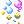
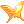
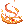
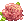
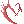

Djinny, the Hateffect Genie
Jump to navigation
Jump to search
About Djinny
Djinny is located on the third floor of Main office, in the Style Boutique.
She can allow you to preview, on herself, different Hats of the "aura" type.
Preview Hat Effects - List of Hats
A
- Angeling Aura:
 Angeling Aura /
Angeling Aura /  [EVT] Angeling Aura
[EVT] Angeling Aura - Arch Angeling Aura:
 Arch Angeling Aura /
Arch Angeling Aura /  [EVT] Arch Angeling Aura
[EVT] Arch Angeling Aura - Astrid Aura
- Autumn Foliage
B
- Bad Monkey Aura
- Beamed Notes:
 Beamed Notes [M] / Beamed Notes [L]
Beamed Notes [M] / Beamed Notes [L]  Black Magic Circle
Black Magic Circle- Blue Magic Circle
- Bombring Aura
 Budding Roses
Budding Roses- Bubbles:  Bubbles [M] /
 Bubbles [L]
Bubbles [L]
C
- Costume Dancing Fallen Sakura:
 Blowing Scattered Sakura
Blowing Scattered Sakura - Costume Time Decor:
 Costume Time Decor [M] / Costume Time Decor [L]
Costume Time Decor [M] / Costume Time Decor [L]  Cyberspace
Cyberspace
D
-  Dazzle
- Devi Aura: Devi Aura /
 [EVT] Devi Aura
[EVT] Devi Aura - Drops Aura
F
 Falling Maple Leaves
Falling Maple Leaves Falling Snow [M] / Falling Snow [L]
Falling Snow [M] / Falling Snow [L]- Floating Stone Of Intelligence:
 Floating Sage's Stone [M] /
Floating Sage's Stone [M] /  Floating Sage's Stone [L]
Floating Sage's Stone [L] - Fluttering Angel: Fluttering Angel [M] /
 Fluttering Angel [L]
Fluttering Angel [L]
G
- Golden Halo
 Green Magic Circle
Green Magic Circle- Green Saiyan's Wrath:
 Green Saiyan's Wrath [M] /
Green Saiyan's Wrath [M] /  Green Saiyan's Wrath [L]
Green Saiyan's Wrath [L]
I
-  Ifrit Aura
K
L

M
 Magic Circle (colored versions are available in alphabetical order of each color)
Magic Circle (colored versions are available in alphabetical order of each color)- Magical Fluttering Feather
- Marin Aura
 Mesmerize
Mesmerize
O
 Orange Magic Circle
Orange Magic Circle- Orange Saiyan's Wrath:
 Orange Saiyan's Wrath [M] / Orange Saiyan's Wrath [L]
Orange Saiyan's Wrath [M] / Orange Saiyan's Wrath [L]
P
 Pepper Aura
Pepper Aura- Perfect Glamour:  Perfect Glamour [M] / Perfect Glamour [L]
- Pink Saiyan's Wrath:
 Pink Saiyan's Wrath [M] /
Pink Saiyan's Wrath [M] /  Pink Saiyan's Wrath [L]
Pink Saiyan's Wrath [L] - Poporing Aura
 Popping Heart [M] /
Popping Heart [M] /  Popping Heart [L]
Popping Heart [L] Popping Sakura [M] /
Popping Sakura [M] /  Popping Sakura [L]
Popping Sakura [L]- Poring Aura
- Pouring Aura
 Powerful Essence
Powerful Essence- Purple Saiyan's Wrath:
 Purple Saiyan's Wrath [M] /
Purple Saiyan's Wrath [M] /  Purple Saiyan's Wrath [L]
Purple Saiyan's Wrath [L]
R
- Rainbow Magic Aura
 Red Magic Circle
Red Magic Circle- Red Saiyan's Wrath: Red Saiyan's Wrath [M] / Red Saiyan's Wrath [L]
 Rhythm
Rhythm
S
- Saiyan's Wrath:
 Saiyan's Wrath [M] /
Saiyan's Wrath [M] /  Saiyan's Wrath [L] (colored versions are available in alphabetical order of each color)
Saiyan's Wrath [L] (colored versions are available in alphabetical order of each color) - Shield Oath
 Show Me the Zeny
Show Me the Zeny- Sixteenth Notes:
 Sixteenth Notes [M] / Sixteenth Notes [L]
Sixteenth Notes [M] / Sixteenth Notes [L] - Snow Powder
- Soul of Meow
 Spring Breeze [M] /
Spring Breeze [M] /  Spring Breeze [L]
Spring Breeze [L] Starry Sky
Starry Sky- Stay Golden
 Summer Fireworks
Summer Fireworks- Summer Melody:
 Summer Melody [M] / Summer Melody [L]
Summer Melody [M] / Summer Melody [L] - Summer Vibes:
 Summer Vibes [M] /
Summer Vibes [M] /  Summer Vibes [L]
Summer Vibes [L] - Sword Oath
 Symphony
Symphony
T
- Teal Saiyan's Wrath: Teal Saiyan's Wrath [M] /
 Teal Saiyan's Wrath [L]
Teal Saiyan's Wrath [L] - Tempo
U
W
-  Warlord's Fury
- Watchwork Mechanism
- White Magic Circle
- White Saiyan's Wrath: White Saiyan's Wrath [M] /
 White Saiyan's Wrath [L]
White Saiyan's Wrath [L] - Winter's Gift:
 Winter's Gift [M] / Winter's Gift [L]
Winter's Gift [M] / Winter's Gift [L]
Y
 Yellow Magic Circle
Yellow Magic Circle- Yellow Saiyan's Wrath:
 Yellow Saiyan's Wrath [M] / Yellow Saiyan's Wrath [L]
Yellow Saiyan's Wrath [M] / Yellow Saiyan's Wrath [L]
Craft a Garment Costume
Djinny just got a new wonderful ability to make your life the shinest possible!
You can now attach your fancy Costume effect to your plain and boring Costume Garment!
Note:
- You can use Garment stuff turned into costume by Miles for the "plain C Garment". Note: If you had transformed your costume with Miles prior to this, putting an Enchantment Stone into it and removing it will update your Garment to use the new system with Djinny. (Keep in mind removing Stones is free of charge)
- Your fancier Costume Garment becomes account-bound.
- You can revert this process by purchasing a washing service from the NPC for 6,500 Nova Points (cheaper option exists at 1,500 Nova Points: it allows to separate the costumes but they will stay bound to your account).
- You cannot add more than one effect to a garment costume so garments with a pre-existing effect cannot take on additional effects. That means that any Costume garment from this list cannot receive this type of enchant (eg Dazzle); they already all have one effect.
You will need:
- a plain Costume Garment
- a Costume with an effect (all of the Costumes above can be used as material)
- 5,000 Nova Points
The Costume providing the effect will vanish from your inventory and become an enchantment on the Costume Garment.
Example :
- a plain Costume Garment =
 Cupid Wings
Cupid Wings - a Costume with a fancy effect = Popping Heart [L] -> Becomes an enchantment on the Cupid Wings
= Cupid Wings with the Popping Heart effect on it.